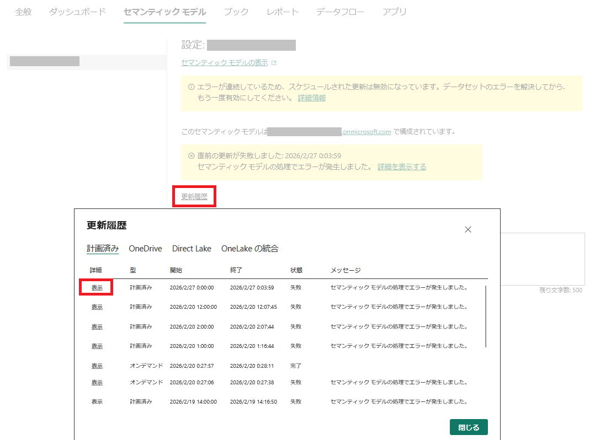
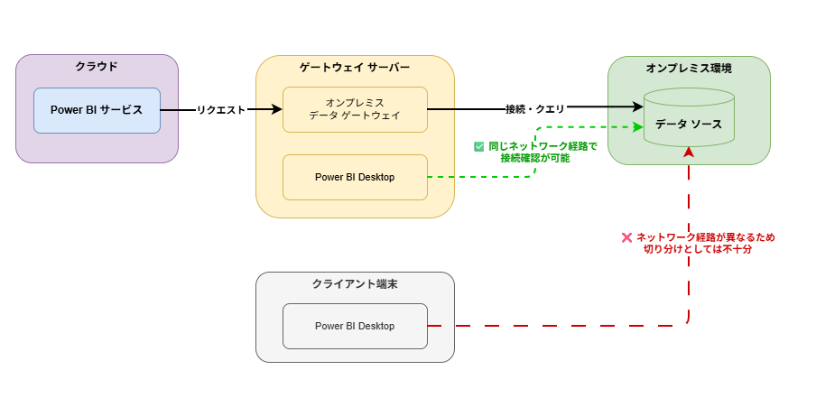
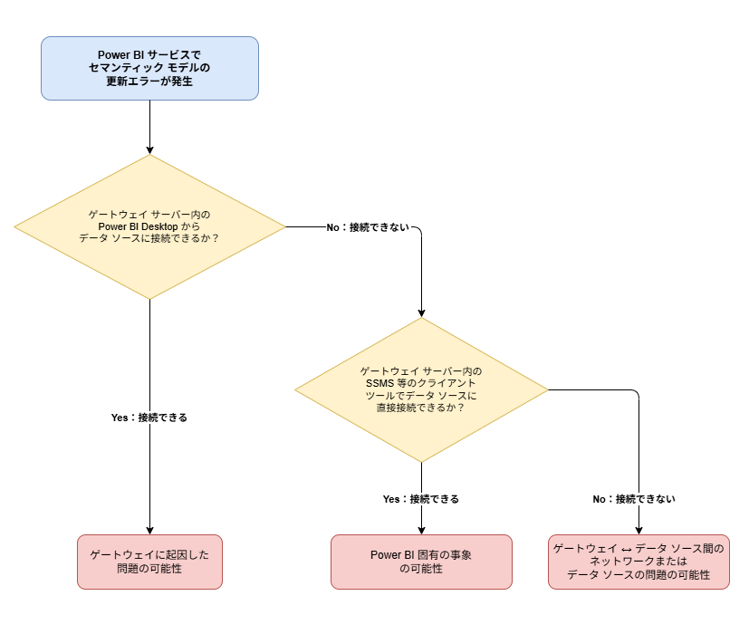

こんにちは、Power BI サポート チームの中川です。
Power BI サービスでセマンティック モデルのスケジュール更新や手動更新を実行した際に、エラーが発生してデータの最新化ができないとお困りの方も多いかと思います。
更新エラーが発生すると、レポートに表示されるデータが古いままとなり、適切な意思決定に影響を及ぼす場合があります。
本ブログでは、セマンティック モデルの更新エラーが発生した際にまず確認いただきたいこと、暫定的な対処方法、ゲートウェイ利用時の切り分け手順、およびサポートへお問い合わせいただく際にご提供いただきたい情報についてご紹介いたします。
重要
本記事は弊社公式ドキュメントの公開情報を元に構成しておりますが、
本記事編集時点と実際の機能に相違がある場合がございます。
最新情報につきましては、参考情報として記載しておりますドキュメントをご確認ください。
目次
- セマンティック モデルの更新エラーとは
- 暫定対処：Power BI Desktop からの発行による回避
- オンプレミス データ ゲートウェイ利用時の切り分け
- お問い合わせ時にご提供いただきたい情報
- よくあるエラーと対応方法
- おわりに
セマンティック モデルの更新エラーとは
Power BI サービスでは、セマンティック モデルに対して、スケジュールされた更新や手動更新（「今すぐ更新」）を実行することで、データ ソースから最新のデータをセマンティック モデルに取り込むことができます。
この更新処理が何らかの理由で失敗した場合、セマンティック モデルには前回の更新成功時のデータが保持されたままとなり、レポートやダッシュボードに最新のデータが反映されません。
更新エラーの原因はさまざまですが、代表的なものとして以下が挙げられます。
- データ ソースへの接続エラー
- データ ソース側のスキーマ変更
- ゲートウェイに関連する問題
- タイムアウトやメモリ不足などのリソース制限
- スロットリング（容量制限）による更新リクエストの拒否
更新エラーが発生した場合、更新履歴からエラーの詳細を確認することが、原因特定への第一歩となります。
更新履歴の確認方法
- Power BI サービスにサインインします。
- 該当のワークスペースを開き、セマンティック モデルの一覧を表示します。
- エラーのあるセマンティック モデルには警告アイコンが表示されます。
- セマンティック モデルの設定画面から「更新履歴」を選択します。
- 失敗した更新レコードの「詳細」列にある「表示」を選択し、エラー メッセージの全文を確認します。

更新履歴を確認する際のポイント
更新履歴の詳細に表示されるエラーメッセージには、エラーの原因や対処方法に関するヒントが含まれている場合があります。例えば、メモリ制限に達したことを示すエラーメッセージが表示される場合や、共有容量（Pro ライセンス）のワークスペースで毎回約 2 時間で更新が失敗する場合はライセンス モードに制限事項に起因するタイムアウトの可能性があるなど、メッセージの内容や更新時間から原因の手がかりが得られる場合があります。まずは、エラーメッセージと更新履歴の期間をご確認ください。
暫定対処：Power BI Desktop からの発行による回避
Power BI サービスでのセマンティック モデル更新がエラーとなる場合でも、Power BI Desktop からデータの更新が可能であれば、更新後に Power BI サービスへ発行することで、手動ではあるものの最新のデータを Power BI サービス上で閲覧できるようになります。
そのため、急ぎデータを最新化する必要がある場合には、本方法によるデータの最新化をご検討ください。
Note
本方法はインポート モードのセマンティック モデルに対して有効です。以下のモードでは本方法は適用できません。
- DirectQuery モード：データをセマンティック モデルに取り込まず、レポート閲覧時にデータ ソースへ直接クエリを発行する仕組みのため、Power BI Desktop から再発行してもデータの最新化にはなりません。
- Direct Lake モード：Direct Lake の更新（フレーミング）は Delta テーブルの最新バージョンへのメタデータ更新であり、インポートのようにデータを取り込む動作とは異なります。
Power BI サービスから PBIX ファイルをダウンロードする
Power BI Desktop のファイル（.pbix）がお手元にない場合は、Power BI サービスからダウンロードすることができます。
なお、増分更新が構成されたセマンティック モデルなど、一部のケースでは PBIX ファイルのダウンロードができない場合があります。ダウンロードの詳細な手順や制限事項については、以下の公開情報をご参照ください。
[!NOTE]
参考情報：Power BI サービスから Power BI Desktop にレポートをダウンロードする - Power BI | Microsoft Learn
Power BI Desktop でデータを更新し発行する
- ダウンロードした .pbix ファイルを Power BI Desktop で開きます。
- [ホーム] リボン > [更新] を選択し、データを最新化します。
- 更新が成功したことを確認します。
- [ホーム] リボン > [発行] を選択し、元のワークスペースに発行します。
これにより、Power BI サービス上のセマンティック モデルが最新のデータで更新されます。
オンプレミス データ ゲートウェイ利用時の切り分け
オンプレミス データ ゲートウェイを使用してオンプレミスのデータ ソースに接続している場合、更新エラーの原因がゲートウェイ、Power BI サービス、ゲートウェイのネットワーク環境、データ ソースのいずれにあるのかを切り分けることが重要です。
切り分けの際にポイントとなるのが、ゲートウェイが動作しているサーバー内の Power BI Desktop からデータ ソースへの接続を確認することです。
なぜクライアント端末ではなくゲートウェイ サーバー内から確認するのか
セマンティック モデルの更新時、Power BI サービスはゲートウェイ サーバーを経由してデータ ソースに接続します。そのため、ゲートウェイ サーバーからデータ ソースへの通信が正常かどうかを確認することが、事象の切り分けにつながります。
一方、クライアント端末の Power BI Desktop から接続できたとしても、クライアント端末とゲートウェイ サーバーではネットワーク経路が異なるため、ゲートウェイ サーバーとデータ ソース間の通信に問題があるかどうかの切り分けとしては不十分です。
なお、何らかの事情でゲートウェイ サーバー内の Power BI Desktop からの接続確認が難しく、クライアント端末からしか確認できない場合でも、クライアント端末から接続ができなければ、データ ソース自体の停止や資格情報の不備など、ネットワーク経路に依存しない問題である可能性を示す参考情報にはなります。
ただし、より正確な切り分けのためには、ゲートウェイ サーバー内の Power BI Desktop からの接続確認が重要です。サポートへお問い合わせいただいた際にも、ゲートウェイ サーバー内からの接続確認をお願いすることが少なくないため、可能な限りゲートウェイ サーバー内からの確認をお試しいただけますと幸いです。

切り分け手順
以下のフローチャートに沿って、問題の切り分けを行います。
Note
以下はおおまかな切り分けの指針です。実際には、ゲートウェイ ログの詳細に調査やそのほかの切り分けをする中で、フローチャートとは異なる結論に至る場合もあります。あくまで初動の切り分けとしてご参考ください。

① ゲートウェイ サーバー内の Power BI Desktop から接続確認
ゲートウェイが動作しているサーバーにログインし、そのサーバー上にインストールされている Power BI Desktop を使用して、同じ認証情報（サーバー名、データベース名、資格情報）を使用してデータ ソースへの接続をお試しください。
接続できる場合：ゲートウェイ サーバーからデータ ソースへのネットワーク通信および認証情報には問題がないことが確認できます。この場合、ゲートウェイ自体の構成や動作に問題がある可能性が高いと考えられます。
接続できない場合：オンプレミス データ ゲートウェイが起因ではなく、ゲートウェイ サーバーとデータ ソース間の通信が確立されていない可能性があります。次のステップに進みます。
② SSMS 等のクライアント ツールで接続確認
Power BI Desktop から接続できなかった場合、SQL Server Management Studio (SSMS) などのデータベース クライアント ツールを使用して、ゲートウェイ サーバーからデータ ソースへ直接接続をお試しください。
接続できる場合：ネットワーク通信自体には問題がなく、Power BI 固有の問題である可能性が考えられます。接続設定や資格情報に問題がないかをご確認ください。
接続できない場合：Power BI に起因しない問題である可能性が高いです。ネットワーク設定、ファイアウォール、データ ソースの稼働状況をご確認ください。
Note
参考情報：Power BI でのデータの更新 - オンプレミス データソースへの接続 | Microsoft Learn
参考情報：オンプレミス データ ゲートウェイのトラブルシューティング - Power BI | Microsoft Learn
お問い合わせ時にご提供いただきたい情報
セマンティック モデルの更新エラーについてサポートにお問い合わせいただく際は、以下の情報をご提供いただけますと、よりスムーズな調査が可能となります。
重要
以下は一般的に必要となる情報です。すべての項目を起票時にご用意いただく必要はございませんが、ご提供いただける情報が多いほどスムーズな調査が可能となります。
また、お問い合わせの内容によっては、追加で情報をお願いする場合がございますので、あらかじめご了承ください。
| # | 項目 | 詳細 | 理由 |
|---|---|---|---|
| 1 | エラーの発生頻度 | 一度きり／毎回発生する／時々発生する 等の頻度 | 一過性であれば一時的なネットワークの不通やサービス側の問題、再現性があれば設定や環境に起因する問題など、頻度によって想定される原因や調査の進め方が変わるため |
| 2 | エラーの発生契機 | 以前は正常に更新できていたか、発行後はじめての更新か、エラー発生前に行った変更（データ ソースの設定変更、ゲートウェイの更新、資格情報の変更など）の有無 | 以前は成功していた場合は環境変更、発行後はじめての場合は資格情報やゲートウェイ構成の問題など、発生契機によって原因の方向性を絞り込めるため |
| 3 | セマンティック モデルの更新履歴 | Power BI サービスの「更新履歴」画面全体が分かるスクリーンショット | 上記の頻度に加え、更新時間のパターンや成功・失敗の推移を視覚的に確認するため |
| 4 | 失敗レコードの詳細メッセージ | 更新履歴から該当の失敗レコードの「詳細」列にある「表示」を選択し、表示されたメッセージ全文（テキスト形式） | エラーメッセージにはエラーの原因や対処方法を示す文言が含まれている場合があるほか、メッセージ内の ID をもとに弊社データセンターのログを調査することが可能であるため |
| 5 | データ ソース種別 | 接続先のデータ ソースの種別（例：Azure SQL Database、オンプレミス SQL Server、SharePoint Online、Lakehouse/Warehouse など） | データ ソースの種別によって考えられる原因や調査手順が異なるため |
| 6 | 利用しているコネクタ | SQL Server、Web、ODBC など、使用しているコネクタの種類 | コネクタによって動作仕様や既知の問題が異なるため |
| 7 | 接続モード | インポート、DirectQuery、Direct Lake などの接続モード | 接続モードによって更新処理の動作やエラーの原因が異なるため |
| 8 | 認証方法 | データ ソースへの接続に使用している認証方法（例：Microsoft アカウント（Entra ID）、基本認証、Windows 認証、シングル サインオン（SSO）など） | トークンの有効期限や資格情報の管理方法が異なり、エラーの原因に関係する場合があるため |
| 9 | セマンティック モデルの URL | 当該セマンティック モデルの URL（例：https://app.powerbi.com/groups/xxxxx/datasets/xxxxx/） |
弊社側でサービスの内部ログを調査する際に必要となるため ※ 中身のデータ・レポート内容に弊社側からアクセスすることはございません |
| 10 | ゲートウェイ サーバー内からの接続確認結果 | ゲートウェイが動作しているサーバー内の Power BI Desktop から同じデータ ソースへの接続が可能か（詳細はゲートウェイ利用時の切り分けをご参照） | ゲートウェイ起因かどうかの切り分けに役立つため |
| 11 | オンプレミス データ ゲートウェイのログ | ゲートウェイ アプリの [診断] タブ > [ログのエクスポート] で取得したログ※ 調査の過程で、より詳細な「追加ログ」の取得をお願いする場合があります | 発生したエラーの詳細ログを確認するため |
Note
コネクタの中には、Microsoft 以外のサードパーティによって提供されているものがあります。対象コネクタの公開情報に「このコネクタは 〇〇 によって所有および提供されています。」のような記載がある場合、弊社では本コネクタに関する具体的な仕様や制限についての詳細な情報を持ち合わせておらず、調査が難しい場合がございます。そのため、該当のコネクタをご利用の場合は、並行してコネクタの開発元へのお問い合わせもご検討ください。
参考情報：[すべての Power Query コネクタのリスト - Power Query | Microsoft Learn](すべての Power Query コネクタのリスト - Power Query | Microsoft Learn)
よくあるエラーと対応方法
以下では、エラーメッセージや更新履歴の情報から原因を特定しやすい代表的なパターンと対応方法をご紹介します。
毎回約 2 時間（または約 5 時間）で更新が失敗する
更新履歴で毎回同程度の時間で失敗している場合、タイムアウトに該当している可能性があります。スケジュールされた更新には以下の時間制限があります。
| ワークスペースの容量 | タイムアウト時間 |
|---|---|
| 共有容量（Pro ライセンス） | 2 時間 |
| Premium 容量 / Fabric 容量 | 5 時間 |
対応方法：不要なテーブルやカラムの削除、クエリの最適化によるデータ量の削減、または増分更新の構成をご検討ください。
メモリ制限に関連するエラーメッセージが表示される
更新履歴の詳細に「Resource Governing」や「memory」を含むエラーメッセージが表示される場合、容量の SKU に応じたメモリ制限に達している可能性があります。
例えば、以下のようなエラーメッセージが該当します。
Resource governing: This operation was canceled because there wasn’t enough memory to finish running it. Either increase the memory of the Premium capacity where this semantic model is hosted or reduce the memory footprint of your semantic model by doing things like limiting the amount of imported data. More details: consumed memory XXXXX MB, memory limit XXXXX MB, database size before command execution XXXXX MB.
Resource Governing: This query uses more memory than the configured limit. The query — or calculations referenced by it
対応方法：インポートする行数や列数の削減、計算列の簡素化や見直しなど、セマンティック モデルの最適化や、より上位の SKU への変更をご検討ください。
スケジュールされた更新が無効化される
スケジュールされた更新が 4 回連続で失敗すると、Power BI は自動的にスケジュール更新を無効化します。更新が実行されなくなった場合、この仕様に該当している可能性があります。
対応方法：まずエラーの根本原因を解消した上で、セマンティック モデルの設定画面からスケジュール更新を再度有効化してください。
その他の参考情報
上記以外のエラーパターンについては、以下の公開情報やブログ記事もあわせてご参照ください。
おわりに
本ブログでは、Power BI サービスでセマンティック モデルの更新エラーが発生した際に確認いただきたいポイントについてご紹介しました。
エラー発生時はまず更新履歴からエラーの詳細を確認し、インポートモードの場合は暫定対処として Power BI Desktop からの発行を検討いただくことができます。
また、オンプレミス データ ゲートウェイをご利用の場合は、ゲートウェイ サーバー内からの接続確認による切り分け等が効果的です。
弊社サポートへお問い合わせいただく際は、本ブログに記載の情報をあらかじめご用意いただくことで、より迅速な調査・回答が可能となりますため、ぜひご協力をお願いいたします。
以上、本ブログが少しでも皆様のお役に立てますと幸いでございます。
アンケートご協力のお願い
Japan CSS Support Power BI Blog では、作成する記事やブログの品質向上を目的に、匿名回答でのアンケートを実施しております。
ユーザー様のご意見・ご要望を参考に今後もお役に立てるブログを目指してまいりますので、ぜひご協力いただけますと幸いでございます。
※ 所要時間は1分程度となります。
【ご協力のお願い】Microsoft Japan CSS Power BI Blog ご利用に関するアンケート
※本情報の内容（添付文書、リンク先などを含む）は、作成日時点でのものであり、予告なく変更される場合があります。